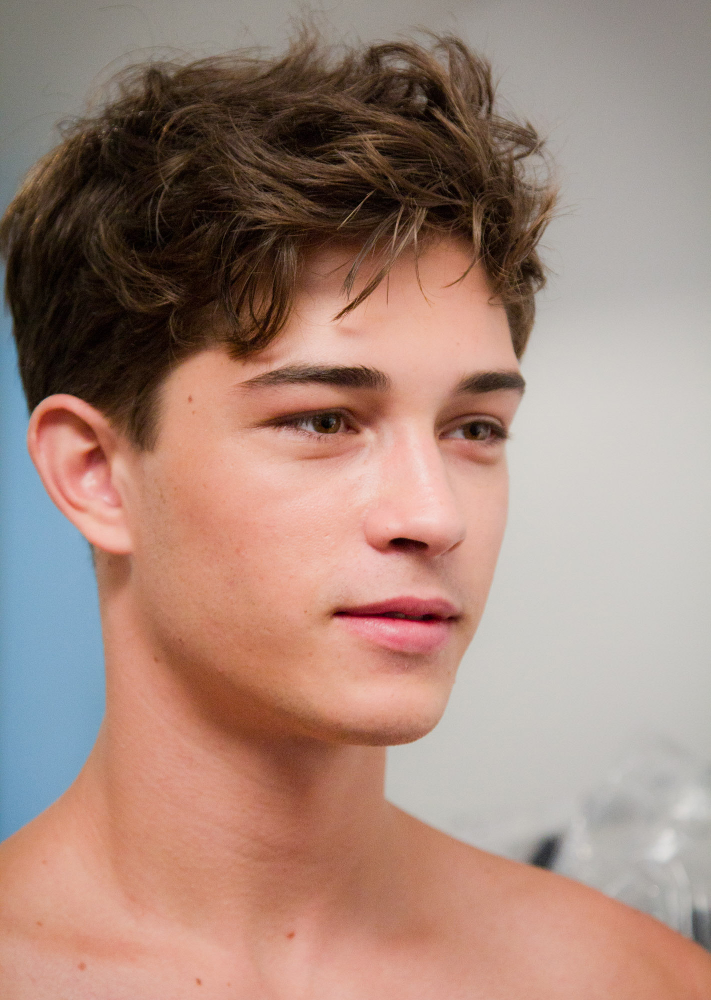
Francisco Lachowski
Sara Cimino from Milan, Italy ( Flickr account )

One-person close head-and-shoulders photographic portrait. Face is clear with detailed skin/hair; shoulders are bare. No other person visible in the retained file.
15 source-reviewed originals. Read results and remaining blockers and required credits. No Roblox uploads or game enablements.

Sara Cimino from Milan, Italy ( Flickr account )
One-person close head-and-shoulders photographic portrait. Face is clear with detailed skin/hair; shoulders are bare. No other person visible in the retained file.
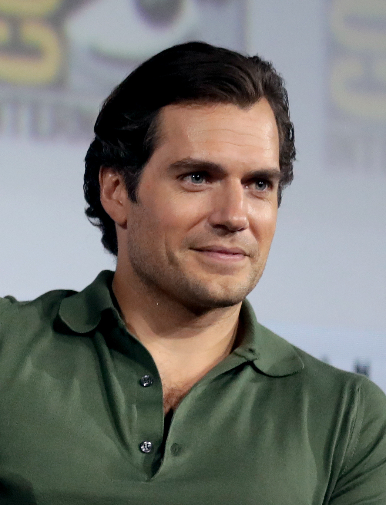
Gage Skidmore from Peoria, AZ, United States of America
Original source · CC BY-SA 2.0
One-person head-and-shoulders portrait with visible face, unobstructed eyes, softly defocused event background. Source already cropped upstream; no additional changes by MOGVILLE.
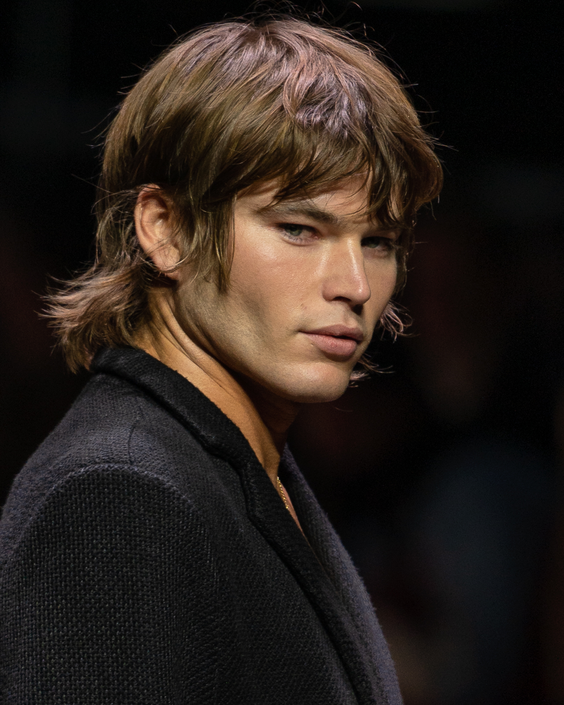
Stefan Heesch, Nordfriisk Photography, Zürich, Switzerland (Commons user Nordfriisk)
Original source · CC BY-SA 4.0
One-person three-quarter upper-body runway photograph. Face is clear and fills the upper half; dark background and jacket. No other face visible.
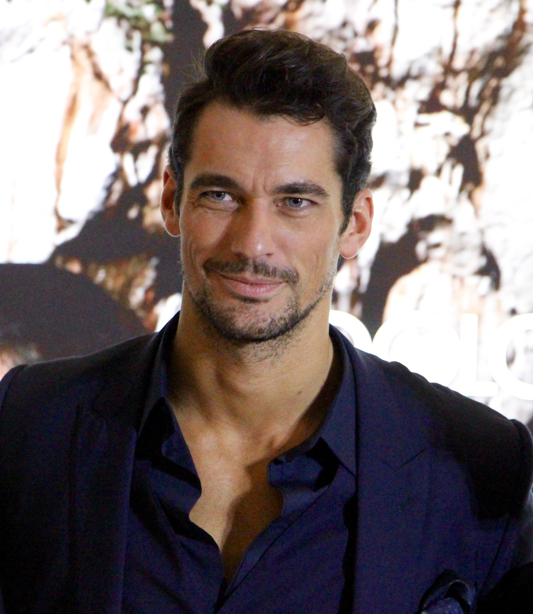
David Seow
Original source · CC BY-SA 4.0
One-person upper-body photograph, 1824×2101. Face/clothing are clear but visibly grainy; bright event backdrop and partial background heads are visible. This is the original, wider-framed photograph instead of the biography crop.
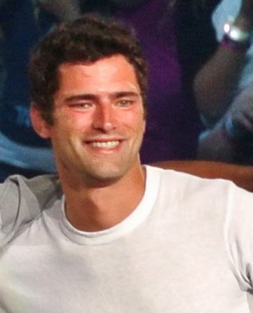
Denielle
Original source · CC BY-SA 2.0
One-person concert crop, head and upper torso visible. Low resolution (361×447), soft focus, strong lighting/color cast; another person’s arm/background fragments are visible at edges. Acceptable for reference review, limited for large card art.
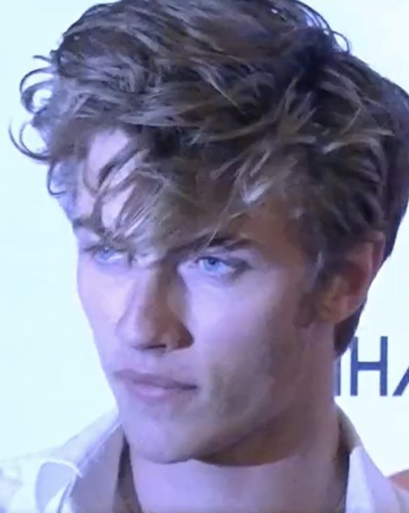
Yoann Lothaire / other viewnewsmedia
One-person head-and-shoulders video still. Face is visible, but soft detail and strong blue/purple lighting; a partial shoulder and event lettering appear along the right edge. Lower-quality reference than a dedicated photographic portrait.
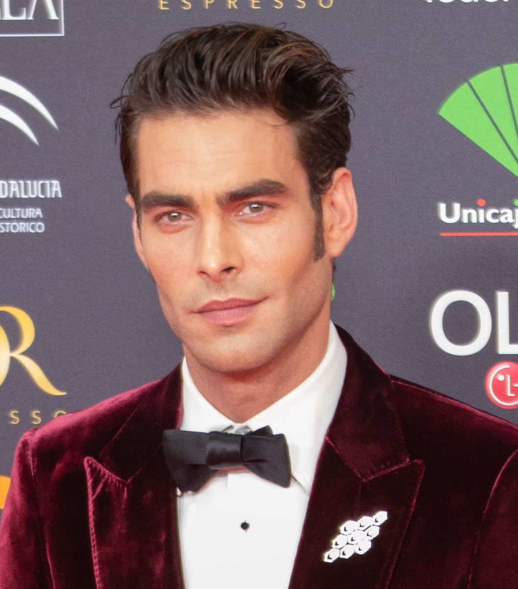
Pedro J Pacheco
Original source · CC BY-SA 4.0
One-person upper-body red-carpet photograph. Face and formal clothing are clear; branded event backdrop behind. Already cropped closely to the subject.
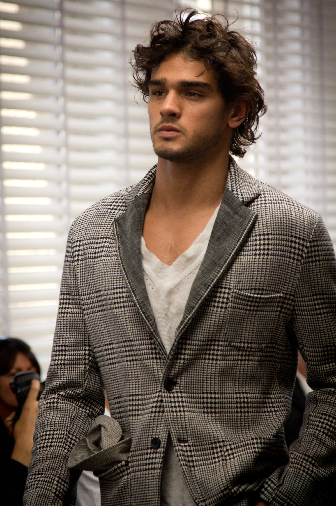
Sara Cimino from Milan, Italy ( Flickr account )
Single main subject in a patterned blazer, photographed from head to upper legs on a runway; face visible and sharp enough for portrait review. Small background bystanders remain at image edges.
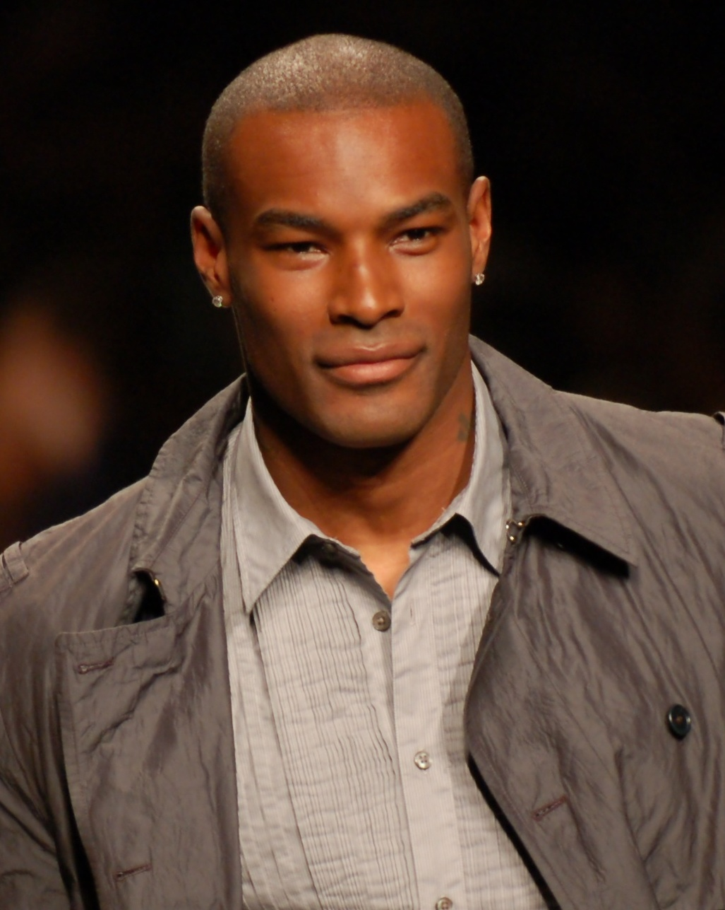
Jesse Gross (Jgro888, per caption and original upload/EXIF)
Original source · CC BY-SA 2.5
Single clear main subject, head-and-torso event portrait in jacket and shirt; no competing face in the crop.
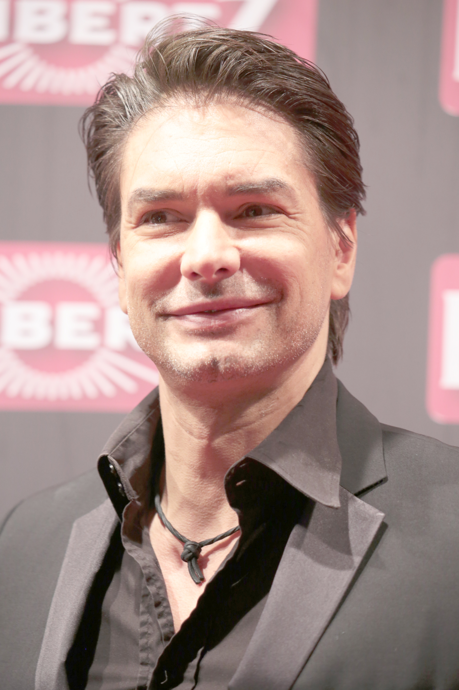
9EkieraM1
Original source · CC BY-SA 3.0
Single main subject in a suit with a fully visible face; event step-and-repeat background. Bright event lighting reduces facial contrast but image resolution is high.
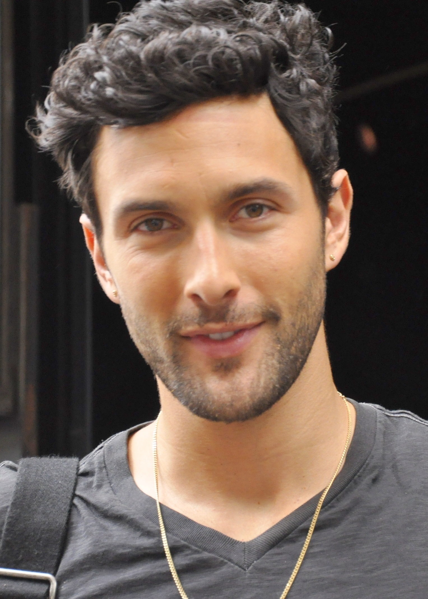
Gabriella Sinisi
Original source · CC BY-SA 3.0
Single main subject in a close head-and-torso portrait with a clear face; black shirt and backpack strap visible.
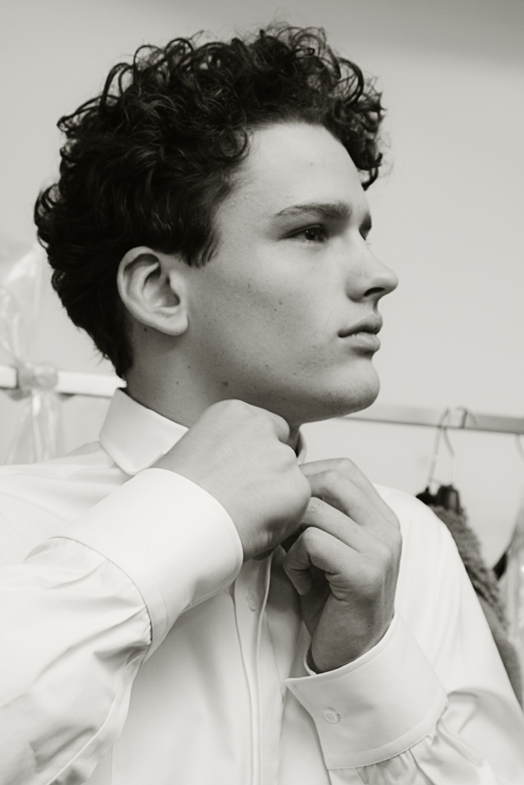
Sara Cimino from Milan, Italy ( Flickr account )
Single-person black-and-white side-profile portrait in a collared shirt; face unobstructed and in focus. No edits by MOGVILLE.
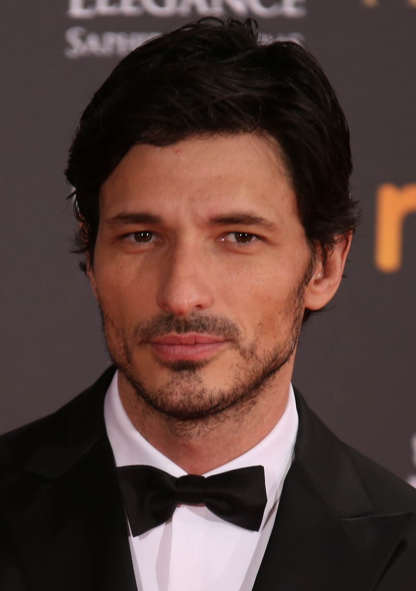
Ruben Ortega
Original source · CC BY-SA 4.0
Close event portrait in tuxedo; face front-facing, clear and unobstructed. Filename identifies an upstream crop; no additional edits by MOGVILLE.
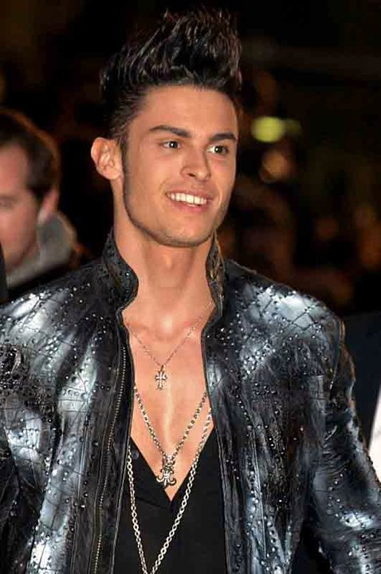
Georges Biard
Original source · CC BY-SA 3.0
Event portrait in jacket, main subject clear and unobstructed; background attendees partly visible. Moderate resolution 478 x 720, so substantial enlargements will be soft. No edits by MOGVILLE.
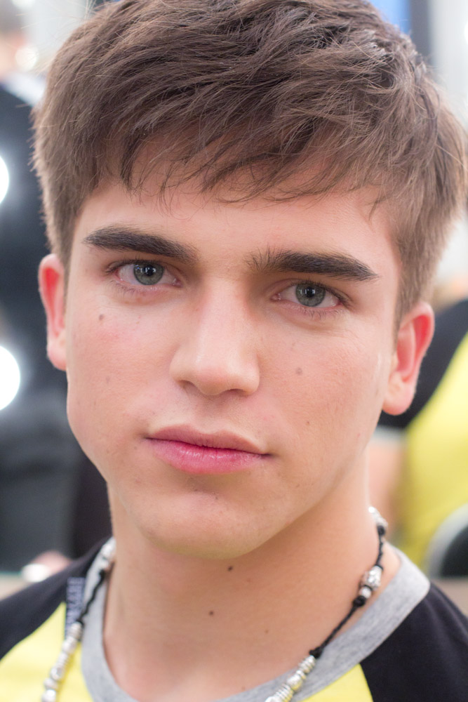
Sara Cimino from Milan, Italy ( Flickr account )
Single-person close head-and-shoulders portrait; front face unobstructed and in focus. Some background attendees are blurred. No edits by MOGVILLE.
_(cropped).jpg){kind=link}


_(cropped).jpg){kind=link}

.jpg){kind=link}

.jpg){kind=link}

.jpg){kind=link}